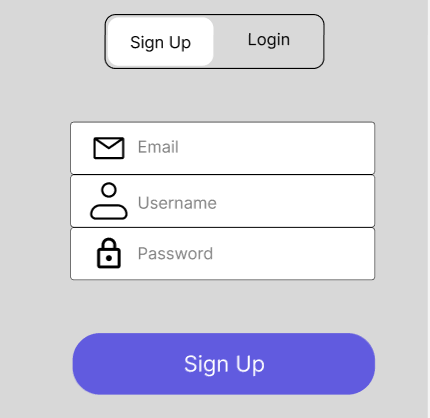
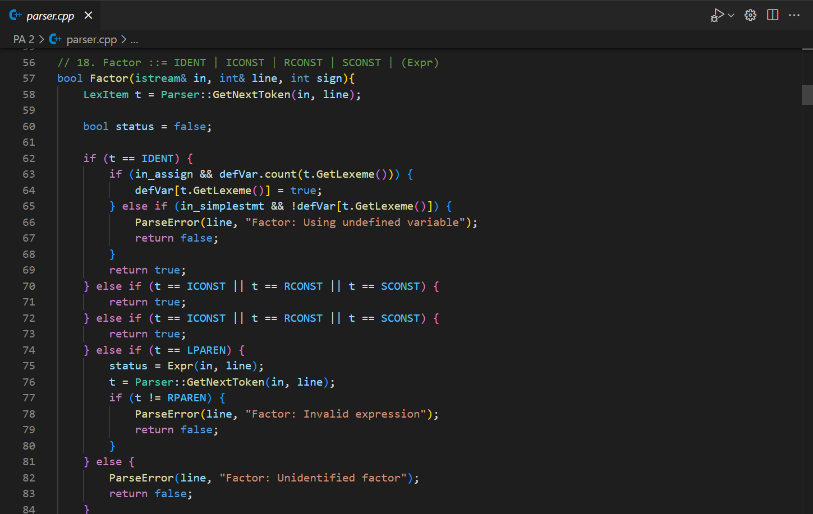
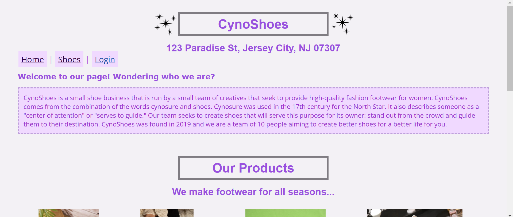
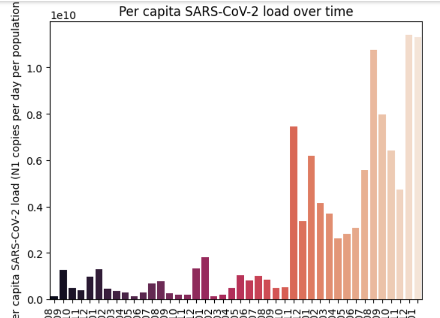

Alieyah May Ordillano
I'm a software engineer with a background in Computer Science from NJIT and experience building full-stack applications, backend services, and AI-powered tools. I work primarily with Kotlin, Java, Spring Boot, React, and TypeScript, while using Python for AI development and integrations. More recently, I've been exploring AI agents, chatbots, and MCP integrations.
Before transitioning into software engineering, I worked as a coding instructor, teaching programming to students and helping them bring their ideas to life. I'm always interested in learning new technologies and building software that solves meaningful problems.
Developing full-stack applications with a focus on AI-powered tools, using Python to build and integrate chatbots, AI agents, and MCP-based solutions.
Led a four-developer team building a live dashboard for a miniaturized generator prototype, translating sponsor requirements into a phased roadmap and delivering each milestone on time.
Built backend services and API integrations using Kotlin, Java, and Spring Boot, while contributing to a React/TypeScript frontend.
Instructed 15+ students (ages 7-16) on Python, HTML, and Scratch using personalized lesson plans and mentored students through 10+ projects, including games and websites.
B.S. in Computer Science
Albert Dorman Honors College

A mobile application aimed at tracking the health of trees in Branch Brook Park
Github Repo- Collaboration between two organizations on campus
- Collaborating closely with team members to implement user-friendly login and registration screens based on Figma prototypes, ensuring consistency with design specifications.
- Skills: Mobile Development, Dart, Frontend Design

Composed of a lexical analyzer, parser, and interpreter for a FORTRAN-like language
- Created a lexical analyzer, parser, and interpreter for a language, applying programming language concepts.
- Utilized C++ features such as pointers, references, and dynamic memory allocation to implement project components.
- Skills: C++, Compiler Construction

A full-stack website for a fictional shoe store built on HTML, CSS, PHP, JS, and MySQL
Github Repo- Developed an internal management tool for a fictional shoe store, focusing on client-side functionalities using HTML, CSS, JavaScript, PHP, and MySQL.
- Created essential pages, including a Home Page, Shoes Page, and Shipping Page, allowing site owners to display products and generate shipping labels.
- Implemented user authentication for site owners, ensuring secure access to management features.
- Skills: Web Development, User Interface Design, Client-Side Implementation

Built to analyze SARS-CoV-2 N gene levels in influent water samples for NYCDEP WRRF
Google Colab- Employed Pandas, Seaborn, Numpy, and Matplotlib for data visualization and regression analysis.
- Applied machine learning algorithms to extract insights and provide actionable data.
- Skills: NumPy, Pandas, Matplotlib, Seaborn, Machine Learning Algorithms
Email: alieyahordillano@gmail.com
Alieyah May Ordillano